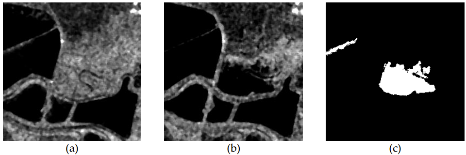

SAR Change Detection Dataset
The San Francisco Dataset with 256*256 pixels is extracted from the scene over the city of San Francisco (California) and its bay. The original images are 7749*7713 pixels, and are available in Earthnet Online [1]. The images are captured in August 2003 and May 2004, respectively. The ground truth change map in Fig. 1(c) is generated by integrating prior information with photo interpretation based on the input images in Fig. 1(a) and Fig. 1(b).

Fig.1 San Francisco dataset. (a) Image acuqired in August 2003. (b) Image acquired in May 2004. (c) Ground-truth image.
Download the dataset
References
- SanFrancisco SAR Image from Earthnet online: http://earth.esa.int/ers /ers_action/ SanFrancisco_SAR_IM _Orbit _47426 _20040516.html
- Automatic Change Detection in Synthetic Aperture Radar Images Based on PCANet.
Feng Gao, Junyu Dong, Bo Li, Qizhi Xu. IEEE Geoscience and Remote Sensing Letters, 2016.
>> return to Feng Gao's homepage 
Last modified: 24, Semptember, 2016.